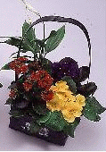

INTERFLORA GARANTI
INTERFLORA GARANTI
Et Floragram leveres kun av fagfolk som er godkjente Interfloraforhandlere. Interflora garanterer kvaliteten og verdien på samtlige Floragram som sendes. Skulle du ha noe å utsette på kvaliteten av sendingen, må eventuelle reklamasjoner snarest rettes til den Interfloraforhandler som har utført leveransen - eller til forretningen som har sendt Floragrammet.Garantien gjelder ikke hvis skaden er påført av 3. part som ikke inngår i Interfloras garantiavtale, eller av andre forhold som forhandleren ikke kan lastes for.
Interfloras nett av fagblomsterhandlere består av 57.000 forhandlere i 136 land over hele verden. Bare i Norge finnes det 430 fagblomsterhandlere som samarbeider om 220.000 Floragrammer pr. år! Floragram er en vakker måte å vise følelser på og samtlige Interfloraforhandlere setter sin ære i å besørge din blomsterhilsen på den aller beste måte. Kan du tenke deg en vakrere måte å sende en hilsen på?